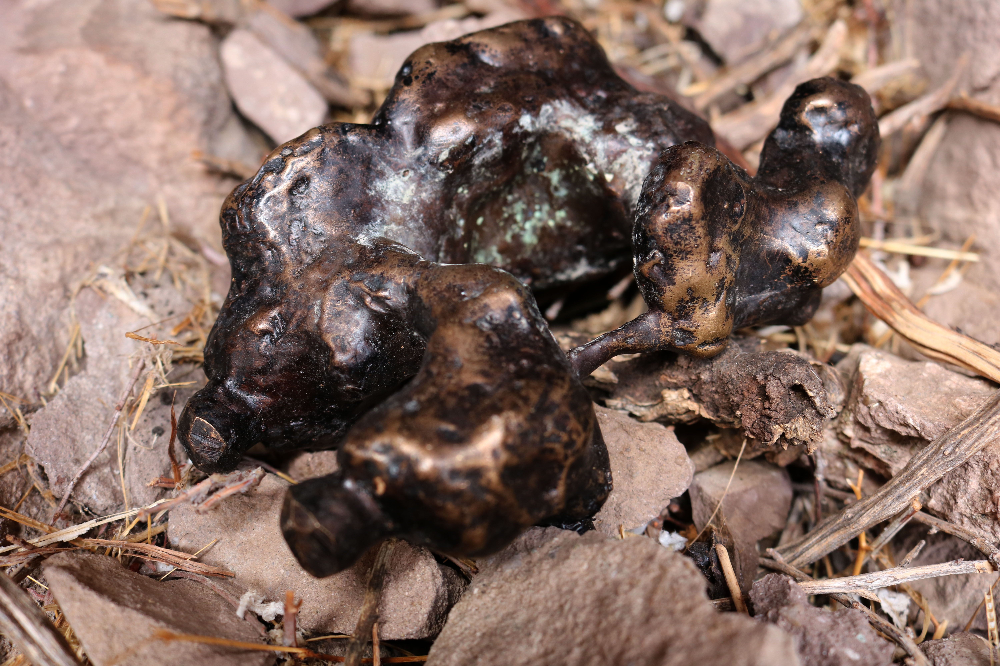
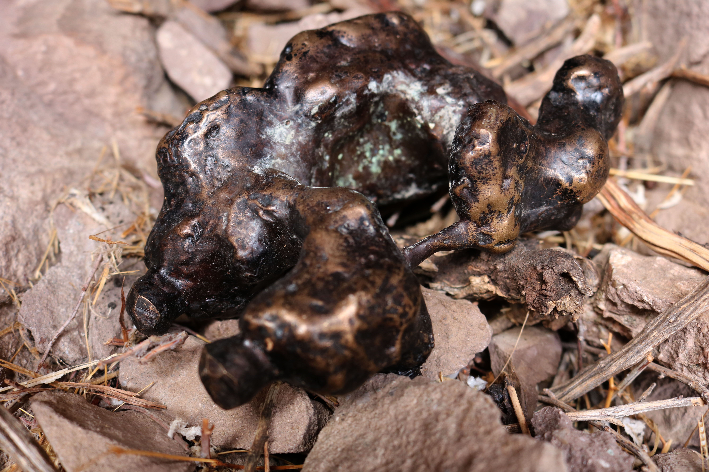

WIP Text:
Vasquez Rocks Natural Area, Agua Dulce, California
The geology of Vasquez Rocks is such that pockets in the sandstone are scooped out by the wind. The industrious crow will make its home inside of these pockets and nest there for its entire mating cycle. The stunted vegetation and dry heat one encounters here are reminders that water is a gift to the desert.


 



Photography by Justin Ortiz
Thanks to Dan Criblez